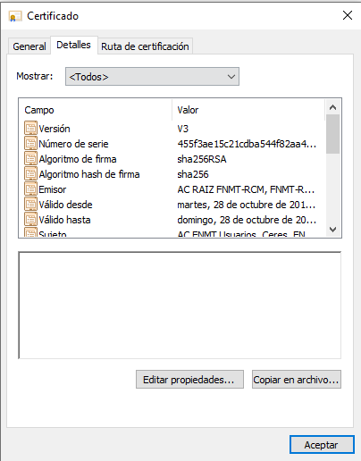
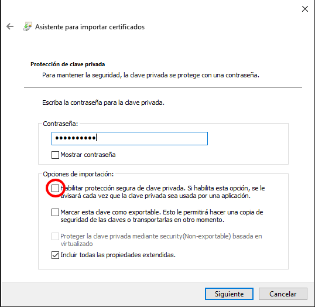

3. Criptografía¶
La criptografía es uno de los pilares sobre los que se asienta gran parte de la seguridad de la transmisión, del almacenamiento o de la autenticación. Es por ello que se dedica una unidad completa a describir sus fundamentos y sus aplicaciones más inmediatas.
3.1. Introducción¶
Ver también
Desarrollada dentro del manual en el epígrafe correspondiente.
3.2. Operaciones criptográficas¶
Ver también
Expuestas en el epígrafe sobre operaciones criptográficas del manual. Las órdenes que se exponen en el apendice práctico no tienen utilidad directa, ya que es más que probable que no se usen en la práctica diaria habitual, pero no son excesivamente complicadas y pueden servir para ilustrar la parte teórica. Por tanto, su impartición depende del tiempo disponible.
3.3. Aplicaciones de la criptografía¶
El epígrafe está dedicado a exponer algunas de las aplicaciones más difundidas de la criptografía:
3.3.1. Certificado digital¶
Ver también
El desarrollo se encuentra en el epígrafe sobre certificados digitales.
El epígrafe es largo y nuestro propósito debe ser entender convenientemente los conceptos y saber consultar y verificar los certificados digitales. En consecuencia, hay algunas partes de las que se puede prescindir:
La generación de certificados a partir de una CA propia. Si se tiene tiempo e interés y se considera que ayuda a entender la infraestructura PKI, puede practicarse la creación de una con GnoMint.
La exposición sobre los catálogos de certificados en Linux.
Nota
El epígrafe, como es normal, centra toda su atención en Linux y, para el caso de certificados X.509 en OpenSSL. Para complementar esas explicaciones, añadiremos aquí algunas breves notas sobre su gestión en Windows.
Certificados X.509 en Windows
La gestión de certificados en Windows se hace a través de un almacén que proporciona el propio sistema operativo y que suelen consultar los programas que los requieren (con la salvedad notoria del navegador Firefox que, como hace en Linux usa el suyo propio). El administrador de certificados es accesible a través de la aplicación certmgr.msc:
La aplicación da acceso a todos los certificados instalados: basta con buscar el requerido (si es propio se encontrará en «Personal») y pinchar dos veces en él para acceder a su información:
Los certificados:
Pueden usarse lo cual supondrá que la aplicación que los requiera los busque en el almacen y nos sugiera usarlos. La clave privada almacenada puede estar cifrada o no según la importaramos en su momento. Por motivos de seguridad es mejor tenerla cifrada.
Pueden exportarse. La exportación de un certificado es accesible a través de la opción Todas las tareas>Exportar... del menú contextual que aparece al pinchar con el botón derecho sobre el certificado. Es de notar que dependiendo de cómo lo importáramos el almacen nos permitirá exportar el certificado público con la clave privada o excluirá de la importación esta última.
Pueden importarse, para lo cual podemos recurrir a Acción>Todas las tareas>Importar... o, simplemente, a pinchar sobre un archivo de certificado (un .p12, por ejemplo). Esto abrirá el proceso de importación:
que tiene algunos pasos interesantes:
Aquel en que se pide la contraseña de protección del archivo y que como puede verse, nos permite:
escoger dos opciones bastante interesantes:
Proteger la clave privada del certificado, para lo cual habrá que marcar la casilla señalada.
Marcar (o no) como exportable la clave. Si el archivo importado ya lo guardamos en otro lugar seguro, lo más prudente es no marcarlo.
Si el certificado contenía una clave privada y decidimos protegerla, entonces la importación continuará con esta ventana:
en la que si aceptamos, la importación acabará sin que la clave privada quede cifrada con una contraseña de seguridad. Lo prudente es pinchar sobre Nivel de seguridad para escoger un nivel alto. En este caso, se nos pedirá la contraseña de cifrado:
y nos aseguraramos de que nadie usará el certificado sin conocer la clave.
Ejercicios
Una vez leído pueden hacerse:
3.3.2. Protocolos seguros de red¶
Se desarrolla en el epígrafe Protocolos seguros de red.
Como ejercicios:
3.3.3. Autenticación¶
Su desarrollo se encuentra en el epígrafe Autenticación. En ese epígrafe se dan tres ejemplos de autenticación en dos servicios, SSH y VPN, que están completamente documentados en el manual. Si se desea profundizar en alguno, es preferible SSH, porque la instalación del servicio es sumamente sencilla y la implementación de la infraestructura PKI bastante simple.
Nota
De hecho, sería recomendable acordar con el profesor encargado de Servicios en red que éste se encargue de explicar la autenticación mediante claves y en este módulo nos limitemos a dar el paso de convertir esta autenticación en una autenticación con certificado digital.
3.3.4. Firma de documentos¶
De la firma en documentos PDF interesa el hecho de que se pueden firmar incrustando la firma en ellos y su estatus legal, pero sin llegar a tratar el uso de la orden pdfsig. Para una práctica, es más apropiado por su sencillez la utilización de AutoFirma (o LibreOffice) y la verificación en línea.
3.3.5. Correo electrónico¶
El epígrafe correspondiente puede reducirse a conocer los dos estándares para cifrado y firma (OpenPGP y S/MIME) y a la firma con un programa sencillo como Thunderbird o una extensión como las indicadas en el epígrafe.
Hay un ejercicio propuesto para GnuPG, pero es probable que resulte demasiado extenso y complicado.
3.3.6. Cifrado de datos¶
Otra de las aplicaciones más habituales de la criptografía es la del cifrado de datos almacenados en disco. No lo trataremos en esta unidad, ya que se expondrá en la unidad sobre Seguridad en el almacenamiento.
3.3.7. Cadenas de bloques¶
Es una tecnología muy en boga que promete tener futuro y despierta curiosidad. Si hay tiempo, pueden dedicarse algunas horas a ella según lo recogido en el epígrafe sobre tecnología de blockchain.